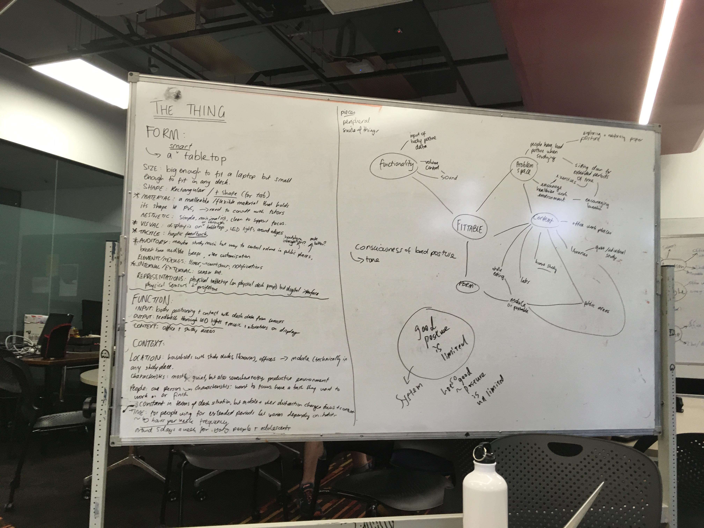

Three main iterative phases were undergone in order to develop Fittable in its final form. Each phase involved careful iteration, testing and evaluation to ensure that we were making the best possible product. If you want the full details of our design & development process, please check out my blog .
Throughout the project, I visualised our concept into number of sketches and kept updating them as we make major changes to it. The Final Prototype sketch was collaborated with my team member, Rebecca.
Initial Concept - Smart Table
The initial design pitched as part of the first proposal was a Smart Desk that is purposed to be placed in user's study/work space. The Smart Desk consists of a number of features that facilitate a healthy working environment. As part of its conception the main purpose of the product is to teach the user to sit with good posture, and as an extension also encourage good study habits. At the time it was believed that the development of a full healthy workstation setting would be the best way to encourage users to reinforce good posture habits in their everyday life.
However after having consultation with tutors, we realised that we should be careful with the conversation between user and the desk as technology telling user what to do can negative experience for them. We also had to consider changing its form to something to use on the desk instead of creating the desk itself as it limits user to study in one fixed space. In addition, we had to do further research as we were unsure if our method would actually help people with their health and posture. The detailed reflection on this design phase can be found here.
First Prototype - Smart Tabletop

Moving out of the table, our team devised a way to make Fittable portable that students and workers can easily carry to their university and workplace. The iterated concept is a smart table top that users can create their own healthy study space on any desks or tables. After meeting with Dr. Genevieve Healy, who is an associate professor of UQ School of Public Health, we discovered that taking active breaks is far more effective than preventing slouching for long-term health. Referring to this advice, We changed our main focus to encouraging postural shifts and breaks from maintaining good posture for a long time. This is achieved through an advanced sensor system that detects movement and contact, and a notification system that informs the user about the importance of taking active breaks. The LED lights around the edge of tabletop glows brighter to notify user that it is time to take a break. The lights glowing under the tabletop lets user to move objects around the Fittable for exercise purpose.
However, after we did our first prototype presentation, we found that users are ensure when they are supposed to take full break as they are not informed on what the brightness of light means.
Also, users were not able to see the lights coming under the tabletop when you are having your laptop opened - which hides objects/view behind. Hence, we had to remove exercise function and find another method function to encourage movement and active breaks. In addition, the size of tabletop was not sufficient enough to fit laptop, user belongings as well as our intended UI. The detailed reflection on prototype presentation can be found here.
Final Prototype


Our final major development phase saw the creation of a tabletop into bigger scale and addition of 'tokens'. Since the first prototype was not big enough to fit laptops and other study essentials, we decided to make tabletop much bigger. Since we decided not to include the lights under the tabletop, we decided to add tokens in our concept that go on everyday items around the room, as each tokens start to glow, users can be informed that they need to make some movements. Further, we added an activity meter on the side of tabletop, which users can track their movement and break status in more easier and obvious way, without a need of translating the meaning behind the light. After including a number of objects in the concept, we couldn’t really say the concept is 100% portable for the ‘full effect’, hence, the context is changed to home from the work space and study space.
The concept of Fittable began with controlling user's behaviour and posture. Now, the concept is focused on supporting healthy posture/study habits rather than telling people what to do and what not to do. This way, users would not to feel any pressure or negative experiences using Fittable and become more positive of interacting with the concept and forming a good study habits naturally in everyday life. The detailed reflection on the final design phase can be found here